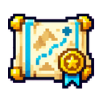
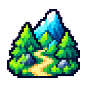
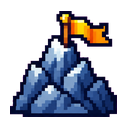
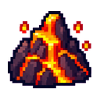
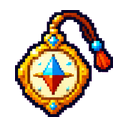
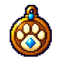

开局与成长入口 · 第四批 PNG
10 枚独立透明图标。难度与遗物预览为 66 px，商店与战后恢复按实际约 24 px 展示；已接入游戏。
难度与标题

难度标题difficulty-header

普通difficulty-normal

困难difficulty-hard

地狱difficulty-nightmare
选宠标题爪印starter-paw
初始遗物与属性

旅者护符traveler_charm
精锐之证elite_badge

驯兽大师beast_master
商店difficulty-shop · 24 px
战后恢复difficulty-recovery · 24 px